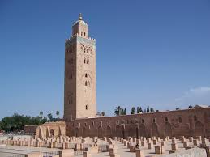

Marrakech
Marrakech es una antigua ciudad imperial en el oeste de Marruecos y un importante centro económico con mezquitas, palacios y jardines. La medina es una ciudad medieval amurallada y densamente poblada que data del período del Imperio Bereber, con pasajes que parecen laberintos y animados zocos (mercados) que venden cerámicas, joyas y tejidos tradicionales.

Andrea:Plazas, jardines, museos y otras visitas imprescindibles en Marrakech.Además de los extraños personajes, en Jamaa el Fna también encontraréis multitud de puestos de zumo de naranja, especias, menta y caracoles.
Plaza de Jamaa el Fna Por el día encontraréis muchas cosas que os llamarán la atención: desde domadores de monos que se te subirán encima hasta encantadores de serpientes, pasando por dentistas exponiendo sus últimas piezas extraídas. Además de los extraños personajes, en Jamaa el Fna también encontraréis multitud de puestos de zumo de naranja, especias, menta y caracoles.

El Palacio Bahia, es una de las obras arquitectónicas más importantes de Marrakech. Fue construido a finales del siglo XIX con el objetivo de ser el palacio más impresionante de todos los tiempos.
La Mezquita Koutoubia , es la mezquita más importante de Marrakech y fue una de las mayores del mundo islámico cuando finalizó su construcción en 1158. Su nombre, que significa "mezquita de los libreros", se debe a las numerosos puestos de libros que la rodeaban en sus primeros tiempos
El Zoco de Marrakech es un laberinto de callejuelas llenas de puestos y tenderetes donde los marroquíes hacen sus compras y donde los tenderos intentan hacer su "agosto" con los turistas.
La Madraza de Ben Youssef, además de ser la más importante, es también la medersa más grande de Marruecos. Encargada por el sultán Abdallah al-Ghalib, su construcción finalizó en 1565. Tiene 130 celdas que permitieron alojar hasta 900 estudiantes. Lo más destacable de la visita es el patio interior, así como ver el austero aspecto que tenían las celdas.